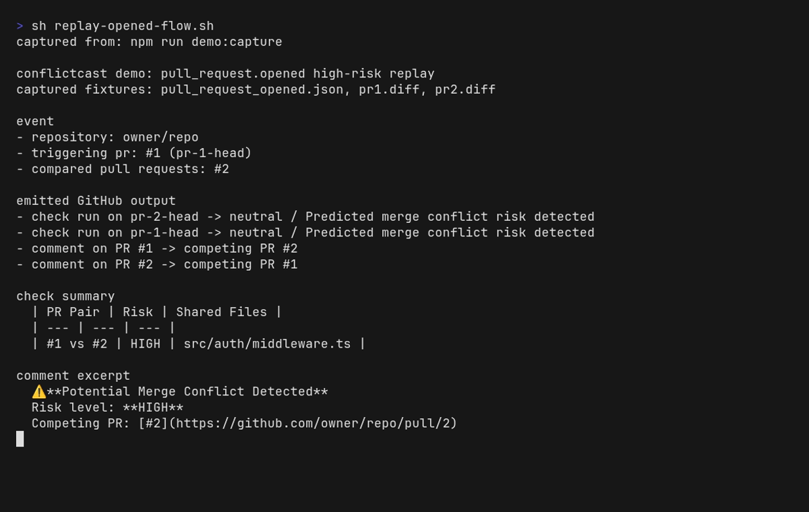

Checks for the fast scan
Post a visible risk grade on the head commit so reviewers see trouble before merging.
GitHub-native merge risk detection
conflictcast is a self-hosted GitHub App that compares every open pull request, spots shared files and overlapping hunks, and posts risk signals inside the place your team already works: the PR itself.

Signals
The win is not abstract. Teams stop discovering risky overlap only after the branch goes stale. conflictcast moves that signal earlier, while the author still remembers the change and the fix is still cheap.
Post a visible risk grade on the head commit so reviewers see trouble before merging.
Link the conflicting PR pair directly in the thread instead of hiding it in a side system.
Start with shared files, then move to overlapping line ranges when the repo needs more precision.
Flow
conflictcast listens to pull-request events, fetches open diffs, compares them pairwise, and writes the result back as checks and comments. No merge queue product required.
A pull request opens or updates.
conflictcast inspects every currently open PR in the repository.
File overlap escalates to line overlap when configured.
GitHub gets a check run and optional PR comment with the risk signal.
Deploy
The repo keeps deployment intentionally small: create a GitHub App, point the webhook at the service, and run the app with Docker or plain Node.
docker build -t conflictcast .
docker run -p 3000:3000 \
-e APP_ID=... \
-e PRIVATE_KEY="$(cat private-key.pem)" \
-e WEBHOOK_SECRET=... \
conflictcast.conflictcast.yml
threshold: line
commentOnLow: false
failCheck: false
maxOpenPRsToAnalyze: 50